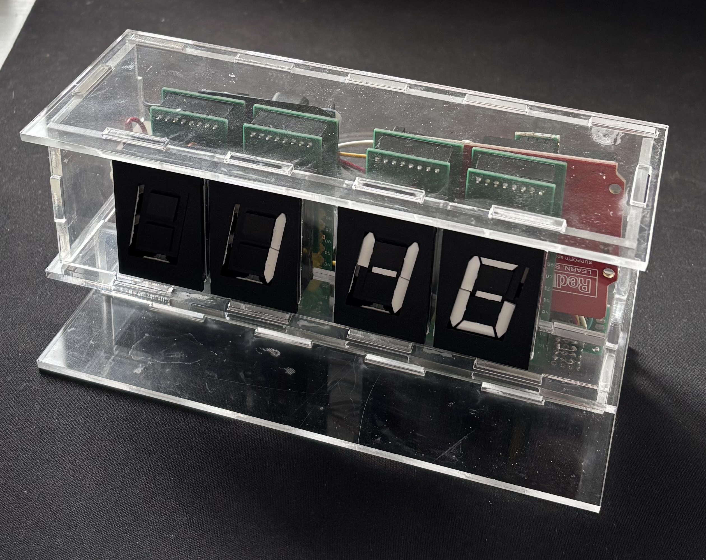
This is an electromechanical 7-segment retro nightstand clock.
For this project, I wanted to experiment with embedded hardware, real-time-clock (RTC) modules, and printed circuit board (PCB) design.
A simulated demo can be found
here.
After coming across a
video
by Proto G Engineering, I was immediately enamored with these displays.
I requested a quote from the company
AlfaZeta,
which makes them.
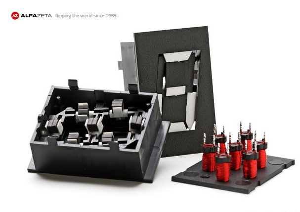
Think of each segment as a solenoid.
The polarity across a segment needs to be flipped in order to change its state.
Once changed, it stays like this indefinitely.
This is why in the thumbnail photo it displays a time, even when not plugged in.
This polarity flipping device is called an H-bridge:
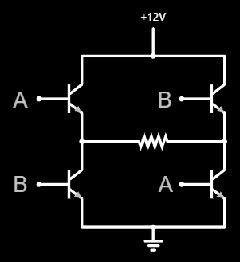
Since each module has 7x 2-pin solenoids, I tied one of each of their pins together.
This means I have one common pin, and 1 pin per segment.
Then, I can use a half-h bridge on each one of those connections.
This is because the logic signals run at 5V, and the segment needs 12V to flip.
I ended up using two L293D quadrpule half-H chips per module.
To combine the above logic and display the individual segments into legible numbers, I need a segment layout:
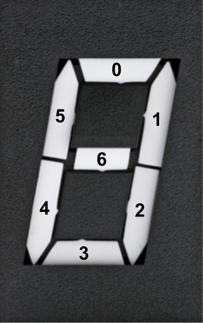
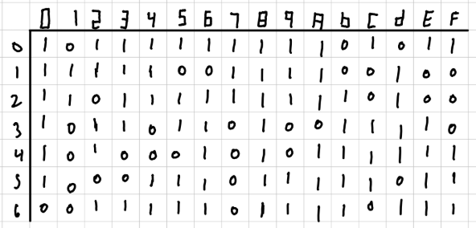
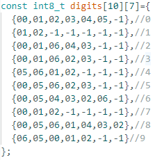
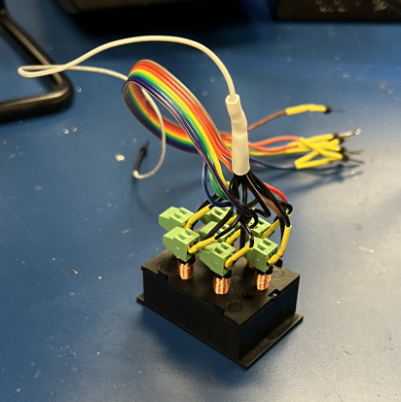
Each module needs 8 logic signals, and there are 4 modules, which means the Arduino doesn't have enough pins to run everything.
So for each module, I used an MCP23008 input/output (io) expander.
This allows me to hardwire a seperate address offset for each module.
Then since all three modules are on the same signal bus, I only need 5 wires to go to all of the modules:
Ground, 5V, serial clock (SCL), serial data (SDA), and 12V.
The following videos respectively show three and four of said modules counting fast.
(photosensitivity warning: flashing lights)
To store the time even when unplugged, a RTC must be used.
This works because it has its own clock and battery, which is always on.
Every minute, the program gets the time from the clock, and if it is a multiple of 5 minutes, it clears the old time and writes the new one.
I did this because while satisfying, even having them update every minute is loud.
I also added a check for when it is nighttime(9PM-8AM) and it will only update on the hour.
Integrating the clock module was a pain because every time there was an error in the code, I had to update the time of the RTC such that it wasnt a few minutes behind.
Here is a video of it changing from 1:59 to 2:00.
Each module needs a PCB to rest on, and each one of those needs to house the control logic.
I chose to make a PCB that fits onto the display, and uses pin headers to connect the the controllers.
The controllers house the half-h-bridges and the io expanders.
Here is my handmade version of the driver:
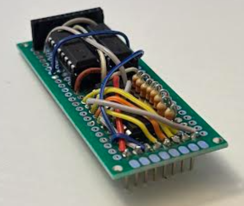
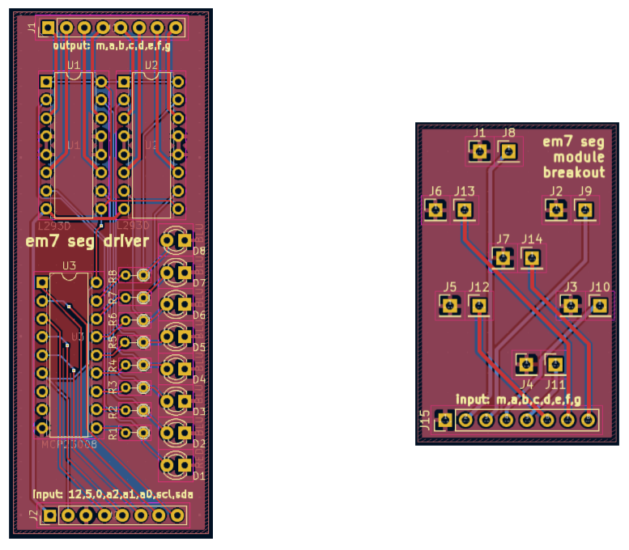
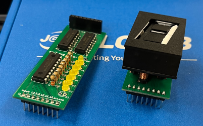
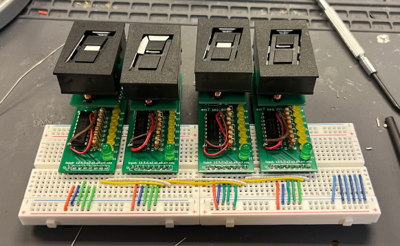
I knew acrylic would be the right way to go because it is simple enough to laser-cut.
My first go at the enclosure was not very promising.
I was mainly trying to see if the laser cutter worked, and the types of tolerances that I would need to account for in the final design.
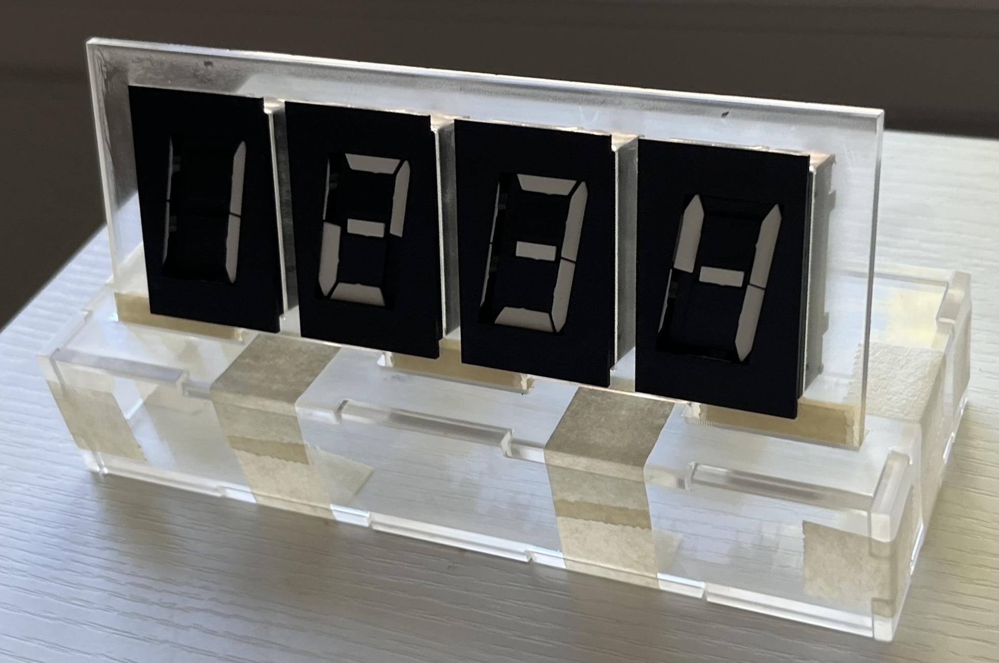
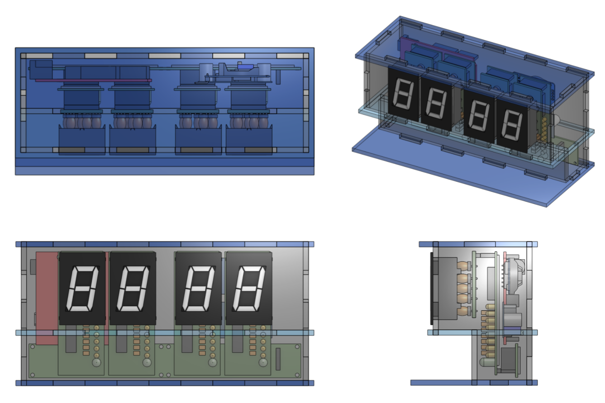
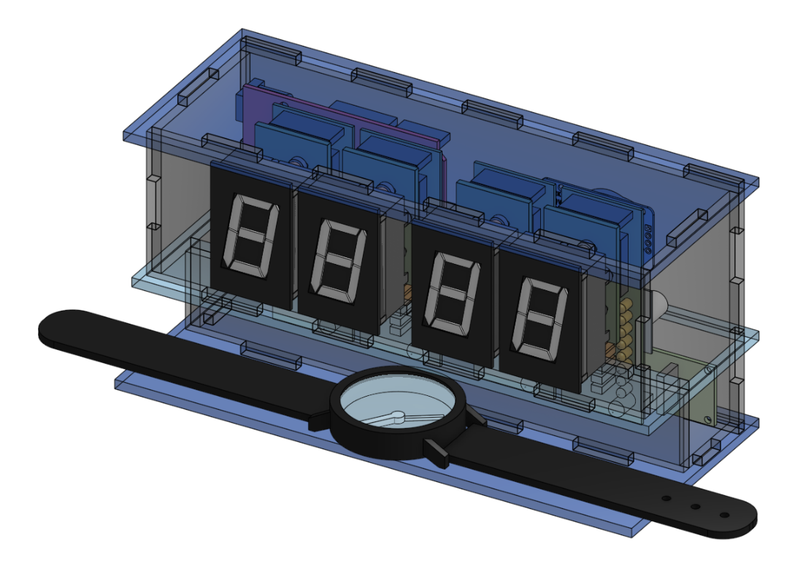
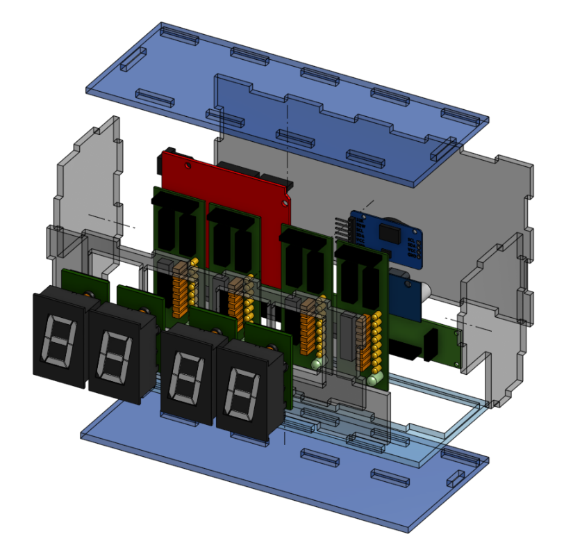